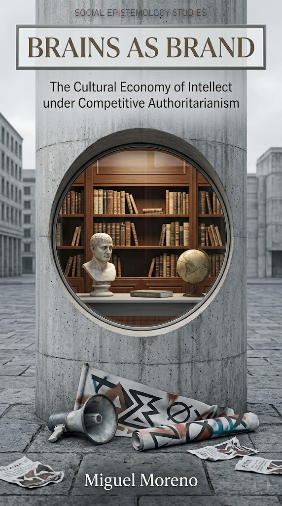
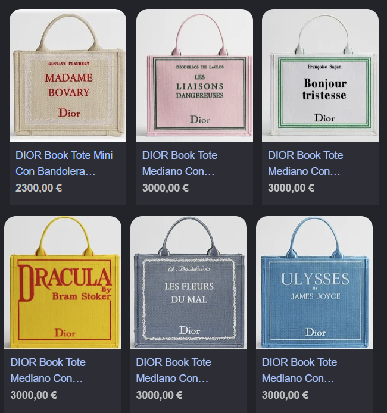

Brains as Brand
The Cultural Economy of Intellect under Competitive Authoritarianism
Miguel Moreno ![]()
Cover, abstract & keywords

This monograph examines the period 2016–2026 through two phenomena that are more complementary than opposed: the resurgence of explicit anti-intellectualism in illiberal political movements, and the simultaneous aestheticisation of intellect in elite consumer culture. Drawing on critical political economy, cultural sociology and democratic theory, the book argues that both tendencies are correlative expressions of the marketisation of public reason under platform capitalism—and of the attendant erosion of the institutional infrastructures on which deliberative liberal democracy depends: universities, the press, public schooling. Performative intellectualism, far from constituting a counter-current to political unreason, functions as its private aesthetic consolation: a mausoleum culture in which the display of knowledge has become a positional signal precisely as its exercise as a public habit has atrophied.
Keywords: anti-intellectualism · performative intellectualism · platform capitalism · mausoleum culture · deliberative democracy
Preface
This book begins with an observation that anyone reading the cultural press of the mid-2020s will have made for themselves. While elected governments in the United States, Hungary, India, Türkiye, El Salvador and elsewhere wage open campaigns against universities, scientific agencies and the independent press; while the second Trump administration freezes billions of dollars in research funding, proposes ideological compacts with private universities, and revokes international students’ visas on the basis of social-media surveillance; while public-service broadcasters are defunded and the language of ‘expertise’ itself has become a slur — at exactly the same cultural moment, expensive handbags are sold with Madame Bovary embossed on the side, supermodels read Camus on the Métro for the cameras, and a TikTok subculture of more than three hundred billion views proclaims that being ‘disgustingly educated’ is the new aesthetic.
The temptation, indulged by much of the cultural commentary that has addressed this contrast, is to read it as paradox: politics goes one way, pop culture the other; reason has been driven out of public life but takes refuge in private consumption. This book argues that the diagnosis is exactly wrong. Performative intellectualism and political anti-intellectualism are not opposites, and the cultural visibility of the one is not a corrective to the other. They are, rather, correlative expressions of a single underlying transformation: the marketisation of public reason under platform capitalism and the correlative erosion of the institutional infrastructures — universities, the public press, mass schooling, the independent civil service — on which deliberative liberal democracy historically depended. When the practice of reason loses its institutional homes, its sign flourishes elsewhere, as a luxury good.
Dior handbags styled as classic literary covers

The argument proceeds across three parts. Part I reconstructs the political crisis of public reason, from the long genealogy of anti-intellectualism to its present-day instantiation in what Levitsky, Way and Ziblatt have, in late 2025, named the United States’ ‘descent into competitive authoritarianism’, and to the structural role of attention-extractive platforms in this descent. Part II turns to the cultural recoding of intellect: the aesthetic economy of BookTok and Substack, the conversion of literary reference into branded surface, the gendered patterns through which ‘smart-as-sexy’ negotiates older hierarchies, and the new dimension introduced by the automation of intellectual labour through generative artificial intelligence. Part III asks what reconstruction would require, taking the contemporary university — the institution most aggressively under attack — as the test case for a normative theory of public reason fit for the present.
The book is written in the conviction that an intellectual culture worth having cannot be either compelled by authoritarian fiat or bought in a luxury boutique. It must be inhabited, which is to say: materially supported, institutionally protected, and democratically distributed. To say so in 2026 is, regrettably, no longer banal.
A note on method and scope. This is a work of critical political theory in dialogue with cultural sociology, media studies and the political economy of knowledge. It does not pretend to comprehensive empirical coverage; the empirical material is selected to illuminate a conceptual argument. Where original surveys, computational analysis or comparative case studies are deployed, the methodological apparatus is documented in Appendix A — Methodological Note. The corpus of cultural artefacts on which the chapters of Part II draw is catalogued in Appendix B — Corpus of Cultural Artefacts Examined, and a chronology of the principal political events of the period 2016–2026 is provided in Appendix C — Chronology of Principal Events, 2016–2026 for the convenience of readers writing about this period after it has receded into history.
A note on the title. The book’s working title was settled relatively late, after consideration of four alternatives that each picked out a different feature of the object and committed the project to a different intellectual lineage. The Aesthetics of Reason: Performative Intellectualism, Political Anti-Intellectualism, and the Reshaping of the Public Sphere would have located the work in a broadly Habermasian frame, with a long descriptive subtitle attempting comprehensive coverage; the cost was a slight loss of analytical specificity and a register that risked the generic. Performing Reason: Cultural Capital, Anti-Intellectualism, and the Reconfiguration of Liberal Democracy preserved Bourdieusian precision but drained the title of memorable purchase. The Mausoleum of the Mind: Reading, Reaction, and the Aestheticisation of Public Reason foregrounded the organising image developed in the Introduction, but at the cost of an elegiac register that the book — for reasons set out in 7 Education as Battleground: Universities, Schools, and the Politics of Curiosity — wishes to refuse: the institutions of public reason are not yet entombed, even if their assailants would have us believe otherwise. Smart Spectacle: The Political Economy of Intellect in an Age of Illiberalism carried a productive Debordian inheritance and an attractive concision, but ‘illiberalism’ is a softer category than the contemporary record in fact warrants, and ‘spectacle’ alone understates the institutional and material substrate that the analysis here treats as decisive.
These rejected titles are recorded not as bibliographical curiosity but because the exercise of naming is itself a constitutive act of analysis. Each candidate would have committed the project to a slightly different theoretical lineage, a slightly different scope, and a slightly different normative tone; the work of choosing between them was — in a small but real sense — the work of fixing the object of study. The retained title, Brains as Brand: The Cultural Economy of Intellect under Competitive Authoritarianism, commits the project to three claims that the chapters then set out to defend: that the marketisation of intellect (brand) is the central mechanism rather than a peripheral effect; that the proper register of analysis is the political economy of culture rather than the philosophy of the public sphere or the morphology of the spectacle; and that the political situation requires a specific term of art — competitive authoritarianism, in the technical sense consolidated by Levitsky and Way (2010) and applied to the United States by Levitsky, Way and Ziblatt in Foreign Affairs in late 2025 (Levitsky and Way, 2025) — rather than the looser vocabulary of ‘illiberalism’ or ‘democratic backsliding’. The title is, in this sense, the briefest possible statement of the book’s argument; the chapters that follow do little more than redeem its three nouns.